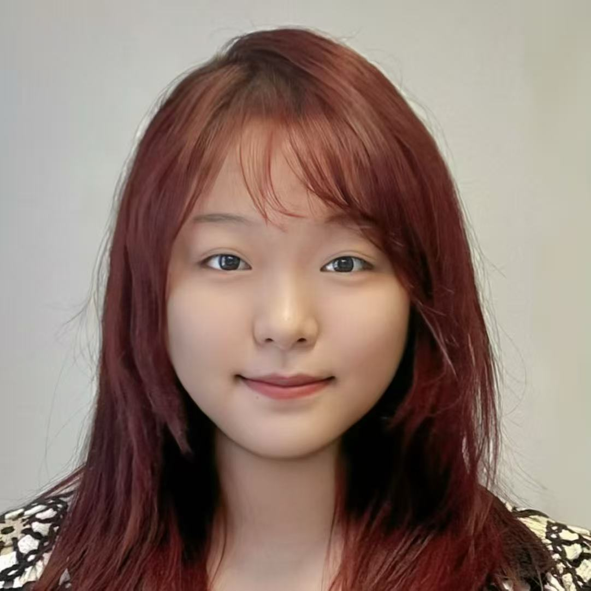
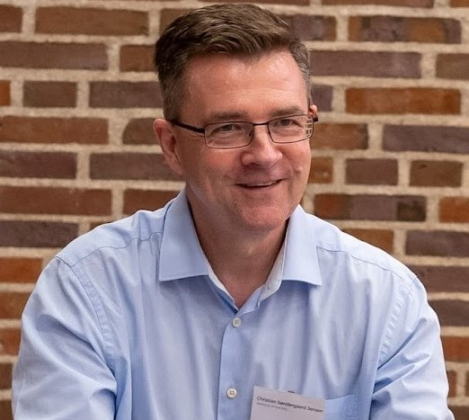

Paper Submission
Aug. 20, 2026
IEEE ICDM 2026 Workshop
November, Shenyang, China
Explore the WorkshopTime series data are widely and continuously generated in applications including IoT systems, transportation, healthcare monitoring, and financial markets. This creates a strong demand for data mining methods that can capture temporal dependencies and support key tasks such as forecasting, anomaly detection, clustering, and classification. Large models offer a promising new paradigm for time series data mining, with the potential to enable more general-purpose representation learning and unified support for diverse downstream tasks. However, developing large models for time series data mining remains fundamentally challenging. These challenges include how to design architectures that capture complex temporal dynamics, how to achieve efficient pretraining and adaptation under limited labels and resources, and how to establish systematic evaluation across heterogeneous tasks, domains, and data distributions. In addition, real-world deployment introduces additional challenges in trustworthiness, explainability, safety, and reliability.
The goal of this workshop is to bring together researchers and practitioners working on time series data mining and large models, to better understand the opportunities and challenges in this area, to present new algorithms, systems, and evaluation methods, and to discuss applications of large models for time series data mining.
✎
We invite original research and position papers, as well as experimental studies,
on large models for time series data mining, including (but not limited to):
◈
All deadlines are 11:59 PM Anywhere on Earth (AoE).
Aug. 20, 2026
Sep. 18, 2026
Oct. 5, 2026
TBD
✉
Submission Site: TBD
☊
Professor
Zhejiang University

Associate Professor
Aalborg University
✦
Associate Professor
Aalborg University
tianyi@cs.aau.dk
Assistant Professor
Aalborg University
yumengs@cs.aau.dkProfessor
Hong Kong University of Science and Technology
raywong@cse.ust.hkProfessor
University of Copenhagen
zhou@di.ku.dk
Professor
Aalborg University
csj@cs.aau.dk✦
Zhen Song, Shandong University
Kristian Torp, Aalborg University
Hengyu Liu, Aalborg University